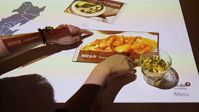

Hi!Story
Augmented reality ordering system for Chinese restaurants in the Netherlands
GroupWork: SumYeut Leung, Junyao Li, Zimeng He, Yufei Liu, Yanni Mei
2 weeks
Course: Lifestyle Design
Hi!Story is an interactive dining experience with storytelling, aiming to strengthen the bond between owners of small Chinese restaurants and customers in the Netherlands. We tried to integrate culture fusion and social connection in this design. It is based on an interactive projection on dining tables, and an auto-ordering system. We hope that this system can enrich the dining experience of customers, as well as help to build up a long-term emotional bond between the customers and the restaurant owners.


This project is the assignment of Lifestyle Design. We need to choose a target group which we have interests in, dive deep into their lifestyle, and try to make a positive impact on their life in aid of design intervention. This time, we choose the owners of Chinese restaurants in the Netherlands. Their dishes cure our homesickness, but what about them? We never thought about that before. So it might be a good chance for us to know about them now.
Chinese restaurants in the Netherlands have been a fledged culture phenomenon, but What is the life of these owners? How did they adjust their previous lifestyle to get used to new life here? These questions arose our interests and we believe it would be a great opportunity to create potential social impact. We performed interviews at two Chinese restaurants and gained 4 useful insights.
"Work is life, life is work."
-Limited social circle
-Inherit the culture and business is a problem
-Imbalanced work-life mode
"Social connection with customers."
-Have strong connection with neighbor customers
-Make adjustment based on customers’ preference
-Customers are the future of the resturant
"Have less connection with hometown, less innovation capability."
-Have little connection with modern China
-Rapid development of advanced online system is a challenge for elderly
-No energy, motivation or
"Affinity to traditional Chinese culture."
-Keep the core of Chinese culture, food, decoration and festivals
-Inherit the culture and business is a problem


Finally, we decided to design for the interaction of dining experience, and focus on the process of ordering dishes. Then we draft the general user journey, to build up an interactive ordering system to trigger playful interaction between customers, restaurant owners, and interesting food stories.


We prototype all the interaction techniques with PowerPoint. Quick and Dirty!!! But this tool is powerful enough for us to elaborate and embody what we want to design. We truly learn a lot about agile prototyping from this experience! Below are the most essential interactions of this ordering system.

1. Interaction between customers.Floating menus with detailed description from chef’s recommendation. You can move and share dishes with your friends and add dishes to the order.


2. Interaction between customers and food stories. Short videos and photos are offered to introduce the underlying story of the dishes.


3. Interaction between customers and restaurant owners.Customers can share comments, experience or personal stories with regards to the food, after finishing the dishes.